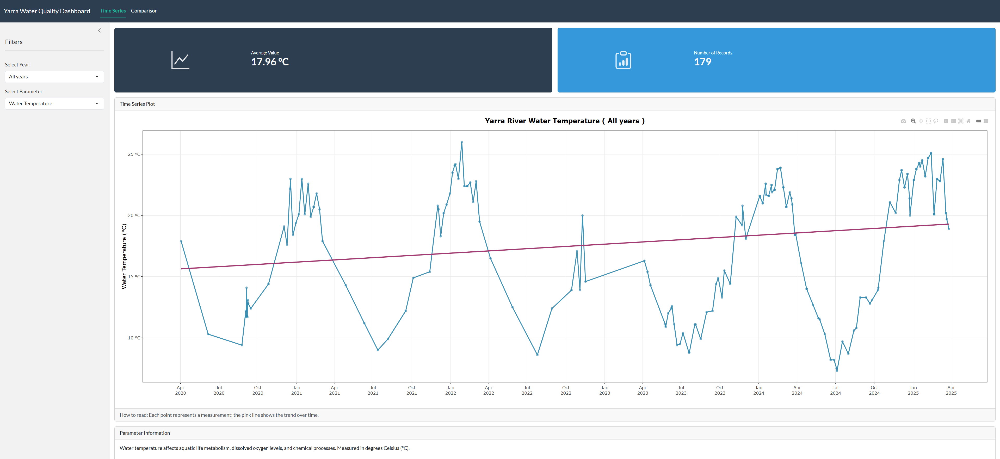

Overview
yarraView provides an interactive dashboard and tools for exploring water quality data from the Yarra River in Victoria, Australia.
The core of the package is Interactive Shiny Dashboard for visualizing water quality trends, including:
- Time Series Analysis of water quality parameters from 2020-2024
- Decade Comparison between 1990s and 2020s measurements
- Multiple Parameters including water temperature, turbidity, salinity, and pH, etc.
Installation
You can install the development version of yarraView from GitHub with:
# install.packages("devtools")
devtools::install_github("ETC5523-2025/assignment-4-packages-and-shiny-apps-linhngo66")Quick Start
Launch the interactive dashboard
This will open the dashboard in your default browser:

This dashboard features:
1. Time series visualization
You can explore water quality trends over time by:
- Filtering by year (2020-2024 or all years)
- Selecting different water quality parameters
- Viewing summary statistics and record counts
- Checking interactive tooltips for detailed information
2. Decade comparison
You can compare water quality between 1990s and 2020s through:
- Side-by-side comparison of 1990s vs 2020s
- Monthly median values with trend lines
- Identify long-term changes in water quality
License
MIT License
pkgdown site: https://etc5523-2025.github.io/assignment-4-packages-and-shiny-apps-linhngo66/